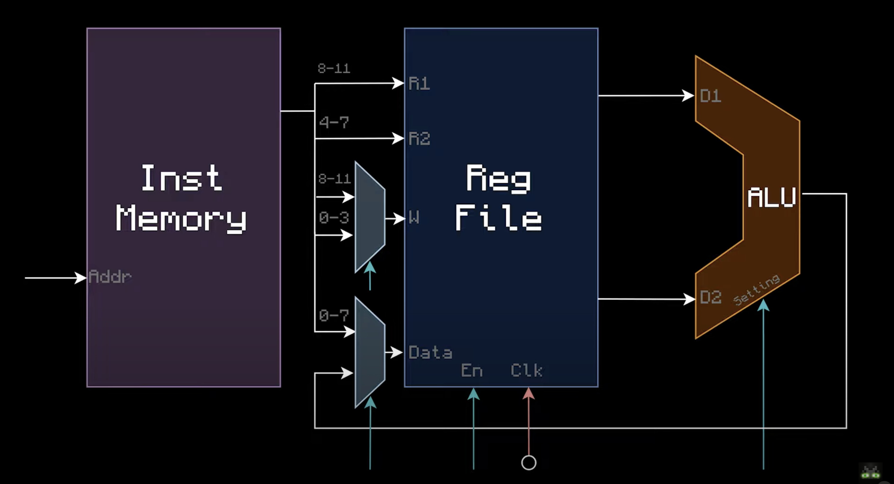

Recall in the mux module we said some operations have different formats. A LDI operation looks different from an ADD operation.
LDI r3 0
ADD r1 r2 r3
Now that you have a control ROM, you should be able to wire both immediate and non-immediate operations. Remember, in our CPU, normal operations would have the third set of four bits as the first input and the last set of four bits as the second input. In an immediate operation, the last EIGHT bits would instead be used. Let's say the opcode for LDI is 1100 and the opcode for ADD is 1101.
LDI r3 0
1100 0011 00000000
ADD r1 r2 r3
1101 0001 0010 0011
In order to resolve this, we need a mux to distinguish the third and fourth set of four bits between the two types of operations. In an immediate operation like load immediate (LDI), we want to copy the address of the write register to the first input register. We then want the last eight bits (in the above example that would be 00000000) to be the data to write to some register. That means, when we see LDI, we want some signal to indicate to us, "Hey, we want to toggle this mux to select different bits." Thus, we need two new muxes at the proposed locations that will select the appropriate bits based on the opcode provided to the control ROM.
In the above, the diagram actually flipped the indexing of the bits, but the idea remains the same. You can notice that the write register and the data to write can both be overridden. Now that you understand how LDI works, you can guess how other immediate operations on the diagram would use muxes to override certain bits in specific locations.
If you need a refresher on how muxes work, please check this section. You should now be able to flip through different types of operations in your instruction memory and see your register file updating register memory accordingly. The diagram is accredited to matbatwings